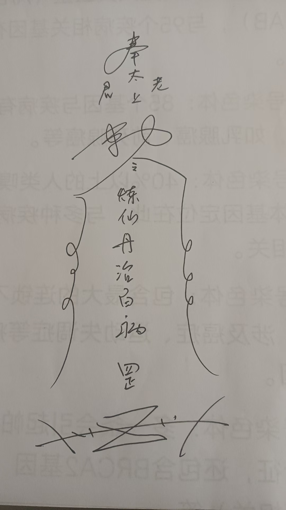
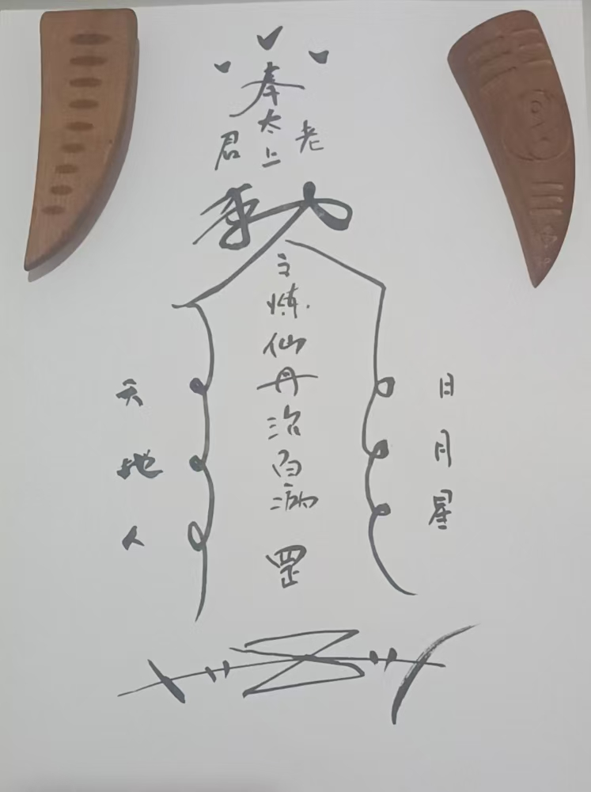
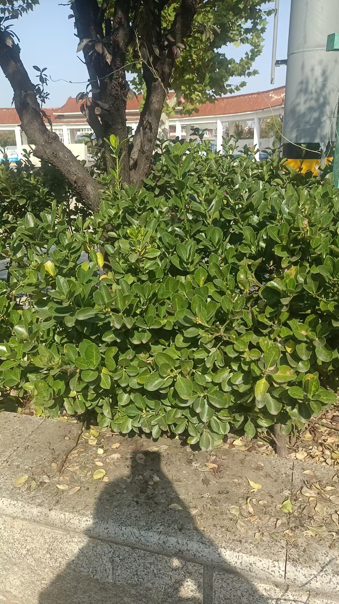
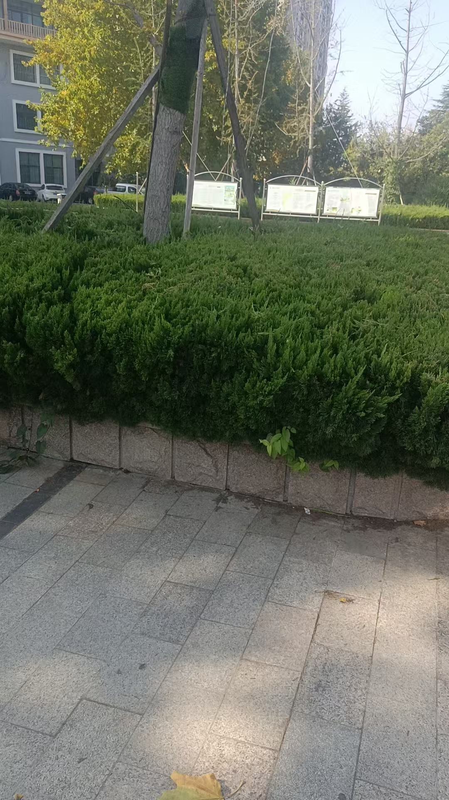
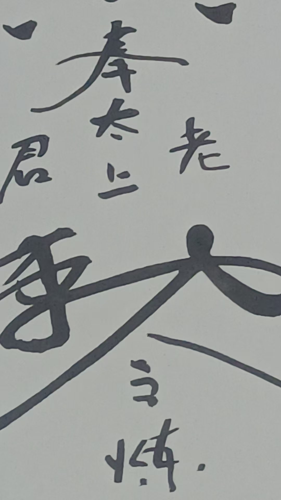
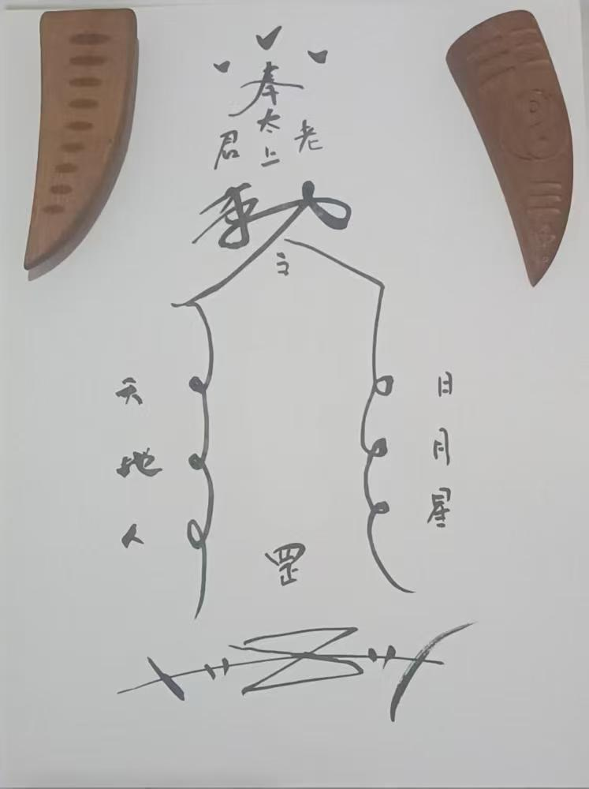

20251031老君祛病消灾法


念咒的同时，往水碗中画符
罡字，是天上天罡星，跟河魁星相对
如果感觉家里不清气，或者神坛不敞亮，就用一碗凉白开，或者纯净水
三山印，托半碗水
右手剑指，指着水，念
太上玄坛李老君，手抱太极下凡尘，老君骑牛显神力，铁牛张口神水现，此水不是非凡水，观音净瓶普度水，四海龙王祈雨水，冰冰冷冷雪山水，连胫接骨茅山水，吞天化骨九龙水，真武祖师万病水，药王华佗治病水，眉山退邪止血水，神水化为李老君，消除百病免灾殃，妖魔鬼怪化为尘，吾奉太上老君急急如律令
这个法每天练五分钟，练七天，14天，21天或者49天，修炼时间越长，效果越好，也可以作为功法来长期修炼
师父如果中断一天，是不是又得从头再来了
不用从头来
还有一句，可以当成功法长期练，时间越长效果越好
念咒的时候要有画面感
念到哪个神明，就像看到来加持水一样
比如，观音净瓶普度水
就想着观音菩萨，拿着宝瓶，把水倒进水碗里
这么多神仙加持，能量那不是一般的大
雪山令，雪山神的雪山水
茅山道士，茅山水
九龙法脉九龙水
九龙就是九宫
乾坎艮震巽离坤兑中
九方位九龙
还有个眉山祖师
练的时候把水喝掉
这个水运用非常广泛
可以治伤外涂，内用可以喝，可以来撒净房子，也可以用来布结界，用处是非常多的，这个可以自由发挥
加持了水之后，洒屋里
可以用


冬青枝
松柏枝
竹枝
春天用柳枝
沾一点水洒
民俗用新的炊帚
就是高粱头绑的，刷锅用的
举一反三
五龙水就是东西南北中
以前说过五龙水净宅
八龙水就是四正四隅，八卦
九龙水，就是九宫
十龙水就是十天干
十二龙水就是十二地支
二十四龙水就是二十四山
六十四龙水就是六十四卦方位
奉令召请，五方五龙吐出五色真水，此水不是非凡水，五龙吐出净天地，一召请甲乙木德星君青龙之水，二召请南方丙丁火德星君赤龙之水，三召请西方庚辛金德星君白龙之水，四召请北方壬癸水德行君黑色之水。五招请中方戊己土德星君黄龙之水，一洒天清日月光明，二洒地灵百草陈芷，三洒人清宁，四洒来福筵，五撒得长生
上洒一下，下洒一下，中间洒一下
从宅子最里边，洒到门口外边
这是五龙水净宅
所有咒语都要牢记，随时会用到
了解了原理，就容易了，就是顺口溜
就是方位
东方，甲乙，木，青
这个是民俗，民间传承，不是迷信
神农尝百草，一个前提，就是五行
蝎子，色青，属木，入肝经


关于符的讲解

符壳都一样，里面的符胆，可以随机应变
比如孩子考学
就把练仙丹治百病
改成，孩子名字，才思敏捷，高中状元
再比如，催婚姻，就改成，名字，月老和合，姻缘早成
是不是这样就简单多了
求财，就可以写名字，财源广进，日进斗金
消灾，治病，除晦气，邪气，就用这个
可以喝水
也可以黄纸画符，在房间里烧掉
用啥墨水画?红墨还是黑墨?
@林林 用香墨
现在国画那种
我很少用朱砂画符
另外，太上老君，也可以换，比如，九天玄女，吕祖，玄武大帝，婚姻可以写成月老
事归谁管，写谁
这一个术，能接骨，能止血
记得前几天，那广东东莞那孕妇吗，血崩
请的专家还没到，就好了
孩子也出了问题，半天也好了
只是隔空画符而已
关键时候真救人
本来念力就很强，再加符咒加重念力
雪山令
实际把符的能量，变得极寒
但寒性伤人，念力要控制的极小，冷凝止血就够了
周围还是白亮光，温热，修复病人身体
孩子出问题，那就是灰色因果场，移星换斗，把灰场换成白亮场，孩子立马就好了
如果让自己的念力变强？
五行大还丹，就是练念力的
隔空画符后怎么操作，是把符字打到对方身上吗？
对啊，这就用到念力了
要到位
功力不够，千公里，路上就散了
两个人可以做实验
远程，观想对方一只手是冰，一只手是火，很快对方就一只手凉，一只手热
感觉到了，马上停止实验
把冰跟火清理消失掉
老师，观想的时候要告诉对方吗?
肯定不告诉
告诉了，就有暗示作用
聊天的时候，操作，感觉到了，就问，我怎么感觉你左手发凉
之类
我现在能做到，远程同频
千里万里，对方看到的，我会随时说几句他看到啥
带对方，进入空间心理疗愈，特别好
不用练功的，就能带进去